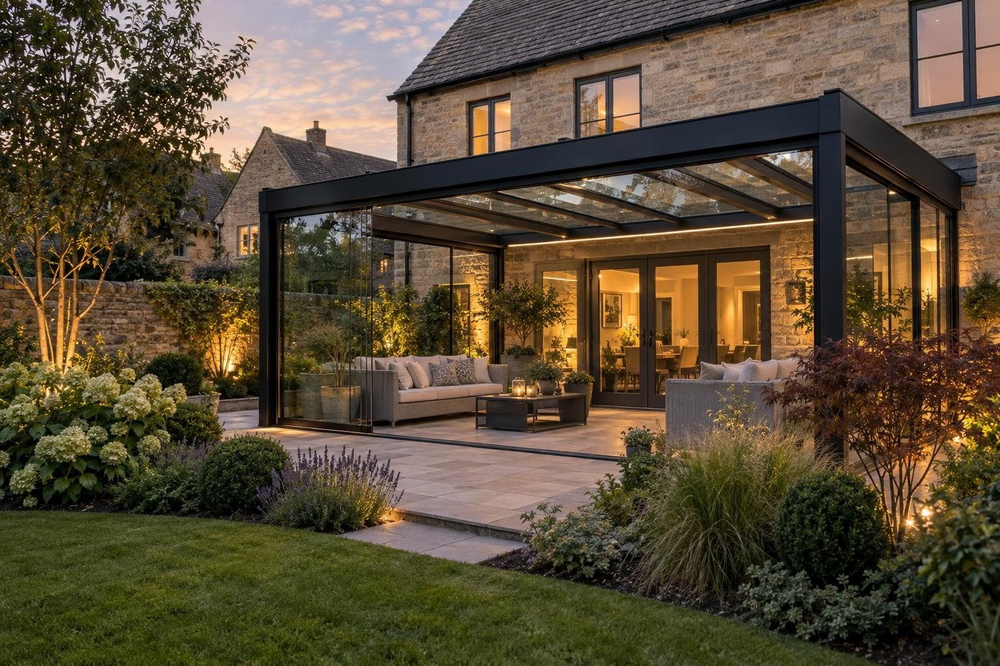

Glass verandas in Cottesmore
Low-maintenance aluminium and glass verandas for Cottesmore family homes, with post footings and drainage designed for the village's mixed limestone and clay.
A 4m × 3m aluminium and glass veranda in Cottesmore typically costs £9,000–£14,000 supplied and fitted, and a 6m × 3m £15,000–£22,000. Side screens, lighting and heaters are priced on top, and we confirm a fixed price in writing after the visit. The local consideration is the ground, which varies between limestone and clay from one plot to the next, so we dig a test hole first.
- 4m × 3m, fitted
- £9,000–£14,000
- Planning
- Usually permitted development at the back
- Ground
- Mixed limestone and clay
- Guarantee
- 5 years, in writing
Our 2026 guide prices, all in. Your fixed price comes in writing after the site visit. Council fees checked October 2026.
Glass verandas in Cottesmore
Cottesmore is a large village north east of Oakham, and much of its housing is family homes where the garden needs to work hard and ask little in return. That is where an aluminium veranda earns its place. The powder-coated frame will not rot or need painting, the glass or polycarbonate roof needs cleaning rather than maintaining, and the built-in gutter takes the rain away. It gives a dry spot for the table, the washing or the children outside the back doors.
In the old centre, the ironstone and limestone cottages sit in the conservation area, and a veranda at the back is usually still straightforward, though the rules are tighter. Around them, later housing with brick back walls and existing patios is usually simple to fix to, and a 4m × 3m frame covers a good share of a typical patio. We work across Cottesmore and nearby Market Overton, Barrow, Burley, Greetham and Thistleton.
What makes Cottesmore different
Cottesmore sits on mixed ground at the edge of the limestone, and the North Brook rises nearby before running on towards Empingham and Ryhall. In practice, one garden can drain freely while the next holds water in clay. For a veranda, that decides two things: how deep each post footing goes, and whether the downpipe can feed a soakaway or needs to connect to a drain. We dig a test hole on the visit and decide from what we see, not from what the neighbours had.
A typical Cottesmore job is a 4m × 3m veranda over the patio of a later family house, fixed to the brick back wall with a plate and flashing, standing on posts set in footings, with a polycarbonate or glass roof and a downpipe to a soakaway or drain. LED lighting can be added for evenings outside, and a side screen where the patio is exposed.
Sources: Rutland conservation areas · Rutland flood risk strategy.
Permissions in Cottesmore
- PlanningA veranda fixed to the house is treated like a single storey rear extension: usually permitted development if it stays within the extension depth and height limits, does not face a road and is not on a listed house. Open-sided verandas under 30m² are usually exempt from building regulations. Listed buildings and the Cottesmore conservation area have tighter rules, so we check your address before anything is designed. Planning Portal: extensions
- TreesTrees in a conservation area need six weeks' notice before work, and protected trees need consent; both are free. Rutland County Council: tree works
- Building regulationsAn open-sided veranda under 30m² is usually exempt. Closing it in with glass walls can change that, so we check with Leicestershire Building Control Partnership (LBCP) first.
- Design and priceWe measure up, check the ground and the planning position, and give you one fixed written price.
Rules checked October 2026.
What you get in Cottesmore
- Test hole dug to decide between soakaway and drain
- Frames that never need painting, suited to busy family gardens
- Conservation area rules checked for the old village centre
- Powder-coated aluminium frame that will not rot or need painting
- Toughened glass or polycarbonate roof, with a built-in gutter and downpipe
- Fixed to the house with a proper wall plate and flashing
The specification
- Survey of the wall, the levels and the planning position
- Pad foundations under each post
- Wall plate fixed and flashed into the brickwork
- Frame and roof panels fitted and sealed
- Gutter and downpipe connected to a drain or soakaway
- Five year workmanship guarantee in writing

“Really pleased with my new driveway. Beautifully finished, friendly professional workmen, would definitely recommend and will be using them again for the garden once other renovations complete.”
Driveway — Google review
“Absolutely great guys, job was done in good time and looks brilliant. No complaints, the driveway is immaculate. More work in the near future, thanks again!”
Driveway — Google review
Everything else we do here


Glass verandas in Cottesmore: questions
How much is a family-sized veranda in Cottesmore?
Do I need permission for a veranda in Cottesmore?
How much upkeep does an aluminium veranda need?
Why do you dig a test hole for a veranda?
Glass verandas nearby
Request a site visit in Cottesmore
We measure up, check levels and drainage, and send a written proposal with the build-up, the programme and one whole price. No pressure and no follow-up sales calls.